Visualisation Gallery and Interpretation
Siyuan Wu & Ulf Schmitz
2025-08-01
Source:vignettes/vignette-04-visualisation.Rmd
vignette-04-visualisation.RmdIntroduction
ScIsoX provides 13+ specialised visualisation functions to explore transcriptomic complexity from different perspectives. This vignette demonstrates each visualisation type with interpretation guidelines.
library(ScIsoX)
library(ggplot2)
# Load example data
data(gene_counts_blood)
data(transcript_counts_blood)
data(transcript_info)
data(sample2stage)
# Create SCHT object
scht_obj <- create_scht(
gene_counts = gene_counts_blood,
transcript_counts = transcript_counts_blood,
transcript_info = transcript_info,
cell_info = sample2stage,
qc_params = list(
min_genes_per_cell = 4000,
max_genes_per_cell = 10000,
min_cells_expressing = 0.02,
min_expr = 1e-6
),
n_hvg = 3000,
verbose = FALSE
)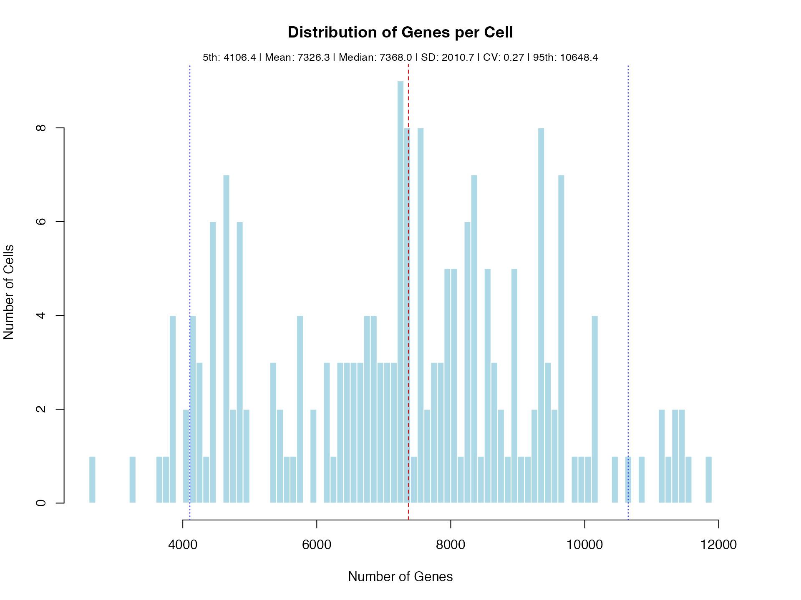
#>
#> === Sparsity Analysis for Current Dataset ===
#>
#> 1. Original Transcript Matrix:
#> Number of genes: 55,487
#> Number of isoforms: 142,238
#> Number of cells: 205
#> Non-zero elements: 2,457,789
#> Zero elements: 26,701,001
#> Total elements: 29,158,790
#> Sparsity: 91.57%
#>
#> 2. Filtered Transcript Matrix (Post-QC HVG):
#> Number of genes: 1,936
#> Number of isoforms: 7,327
#> Number of cells: 181
#> Non-zero elements: 73,057
#> Zero elements: 1,253,130
#> Total elements: 1,326,187
#> Sparsity: 94.49%
#>
#> 3. SCHT Structure (Post-QC HVG):
#> Non-zero elements: 73,057
#> Zero elements: 154,780
#> Total elements: 227,837
#> Sparsity: 67.93%
#>
#> 4. Naive 3D Tensor (Post-QC HVG):
#> Required dimensions: 1,936 x 21 x 181
#> Non-zero elements: 73,057
#> Zero elements: 7,285,679
#> Total elements: 7,358,736
#> Sparsity: 99.01%
#>
#> 5. Zero Elements Avoided by SCHT:
#> vs Original Matrix: 26,546,221
#> vs Filtered Matrix: 1,098,350
#> vs Naive 3D Tensor: 7,130,899
#>
#> 6. Memory Efficiency Summary:
#> SCHT uses only 0.78% of original matrix size
#> SCHT uses only 17.18% of filtered matrix size
#> SCHT uses only 3.10% of naive tensor size
# Calculate complexity metrics
tc_results <- calculate_isoform_complexity_metrics(scht_obj, verbose = FALSE)Complexity Landscape Visualisations
1. Complexity Landscape
Purpose: Visualise the relationship between complexity metrics in a 2D scatter plot.
plot_tc_landscape(
tc_results,
n_label = 10,
label_direction = "top"
)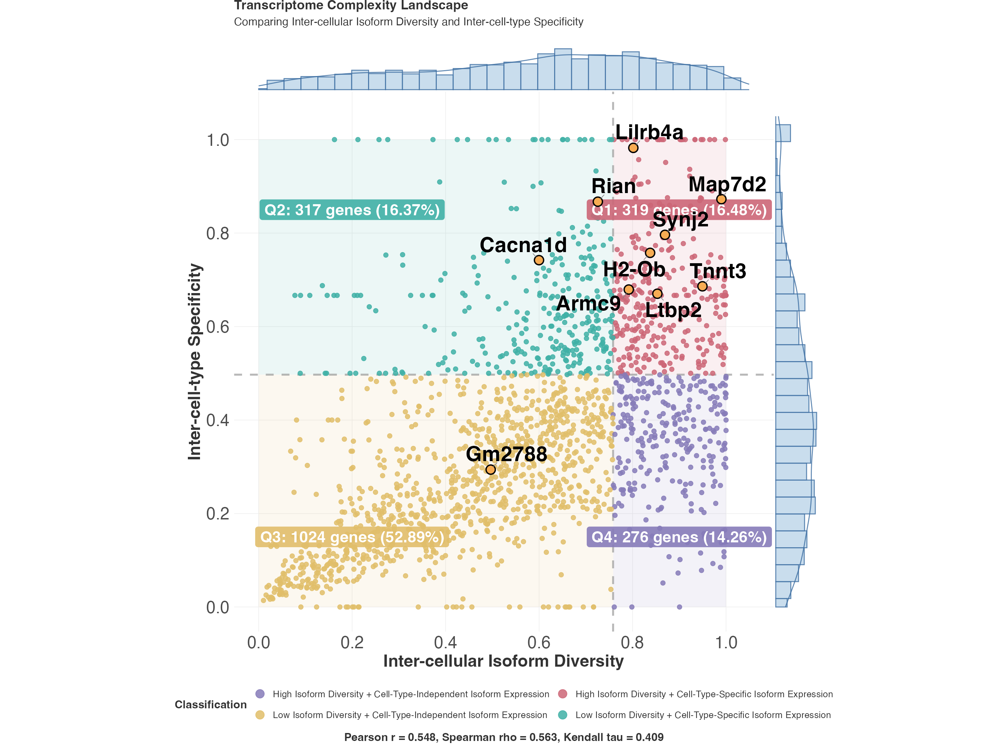
Interpretation: - Top-right: Genes with high complexity in both dimensions - Bottom-left: Simple genes with limited isoform diversity - Top-left: Genes with cell-specific isoform expression - Bottom-right: Genes with constitutive multi-isoform expression
2. Density Contour Plot
Purpose: Show the density distribution of genes in complexity space.
plot_tc_density(
tc_results,
use_thresholds = TRUE
)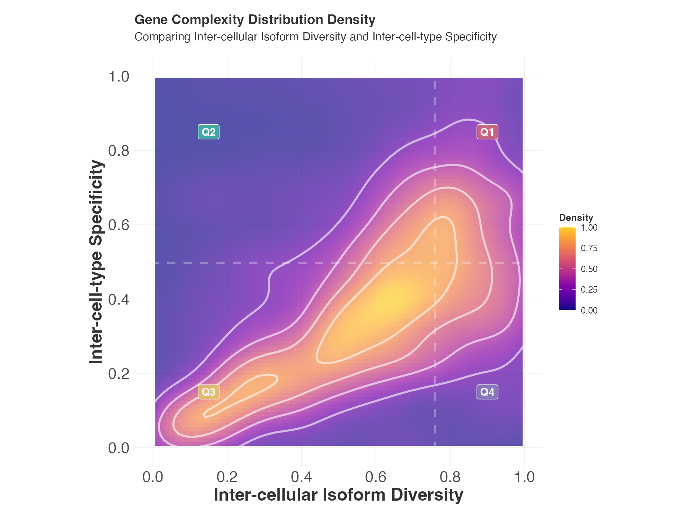
Interpretation: - Contour lines indicate gene density - Multiple peaks suggest distinct gene populations - Useful for identifying common complexity patterns
3. Diversity Comparison
Purpose: Compare the distributions of different diversity metrics.
plot_diversity_comparison(
tc_results,
label_top = 10
)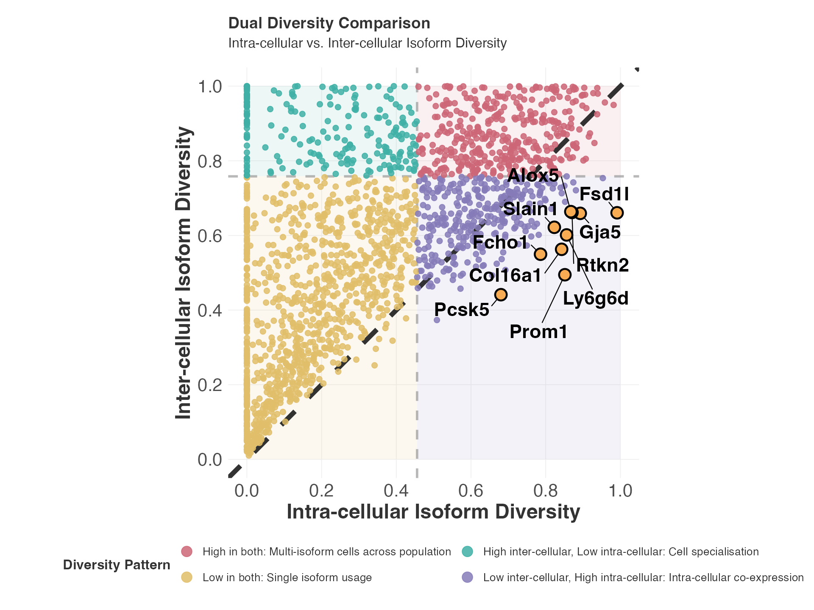
4. Complexity Ridge Plots
Purpose: Show distributions of complexity metrics across categories.
# For global view
plot_complexity_ridges(
tc_results,
type = "global"
)
5. Threshold Visualisations
Purpose: Understand how metrics are classified into low/medium/high categories.
# Note: This function expects threshold plots object, not tc_results
# Skip this example as it requires different input
plot_threshold_visualisations(tc_results$threshold_plots)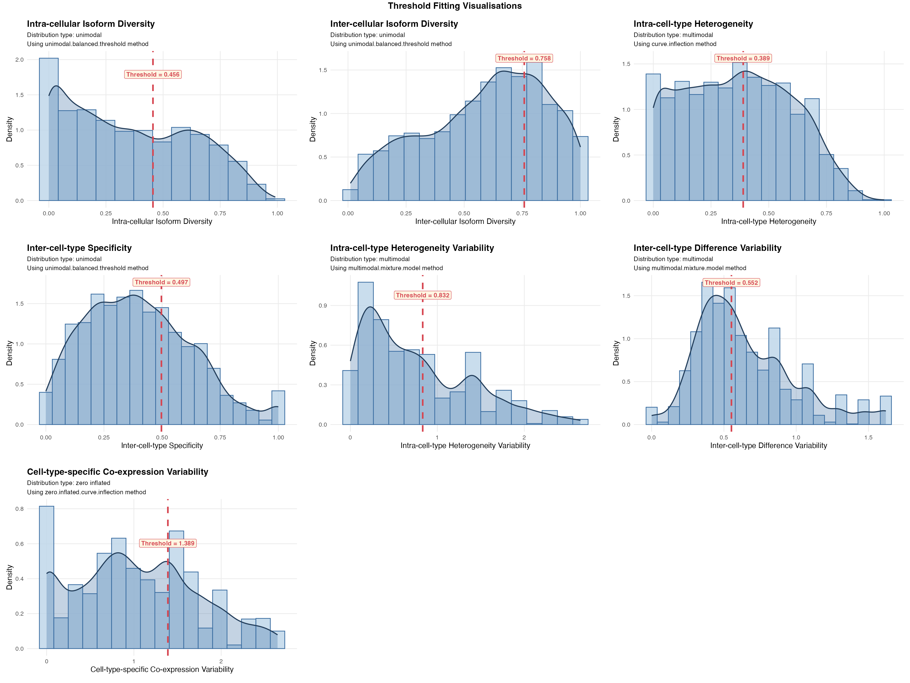
#> TableGrob (2 x 1) "arrange": 2 grobs
#> z cells name grob
#> 1 1 (2-2,1-1) arrange gtable[arrange]
#> 2 2 (1-1,1-1) arrange text[GRID.text.493]Isoform-Specific Visualisations
6. Isoform Co-expression Heatmap
Purpose: Visualise correlation patterns between isoforms of a gene.
plot_isoform_coexpression(
scht_obj,
gene = "Irf8",
method = "pearson",
display_numbers = TRUE
)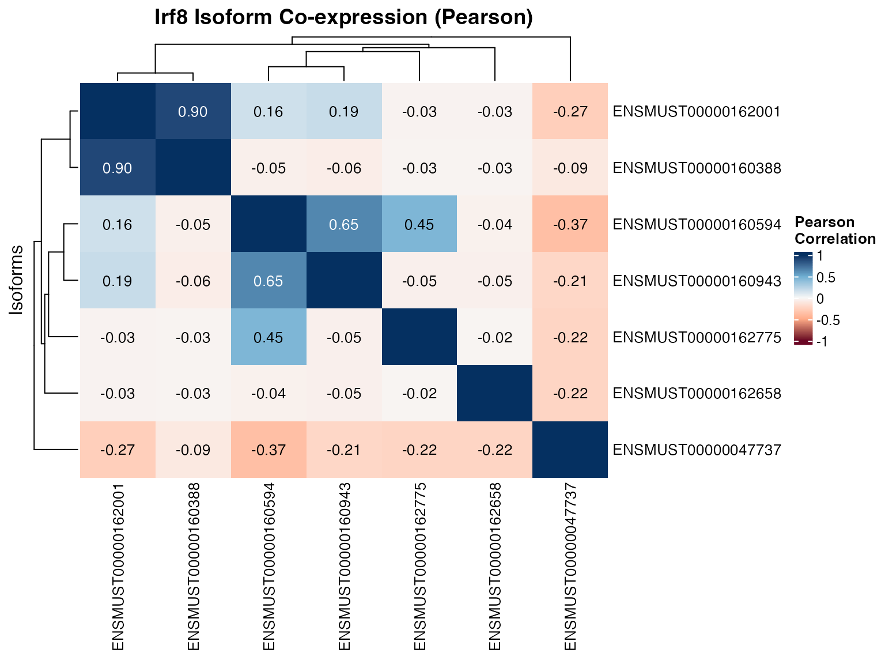
Interpretation: - Red: Positive correlation (co-expressed isoforms) - Blue: Negative correlation (mutually exclusive isoforms) - Clustering reveals isoform groups
7. Isoform Usage Profile
Purpose: Show the relative usage of isoforms across cell types.
plot_isoform_profile(
scht_obj,
gene = "Irf8"
)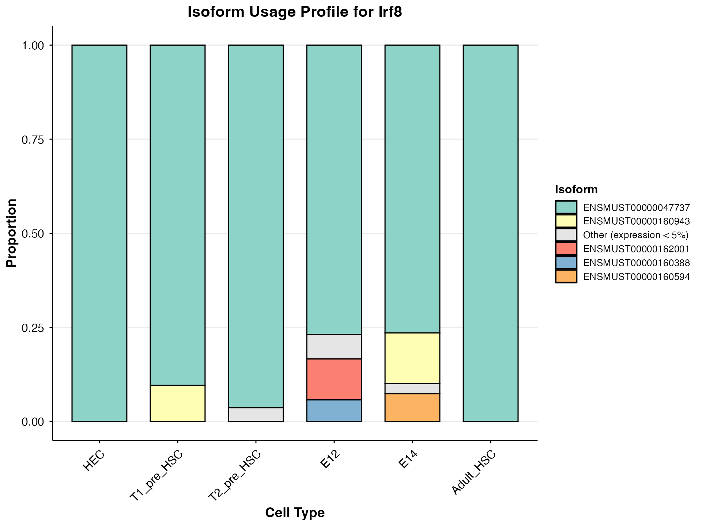
8. Isoform Transitions
Purpose: Visualise how isoform usage changes across cell types or states.
plot_isoform_transitions(
scht_obj,
gene = "Atl1",
cell_type_order = c("AEC","HEC","T1_pre_HSC","T2_pre_HSC","E12","E14","Adult_HSC" )
)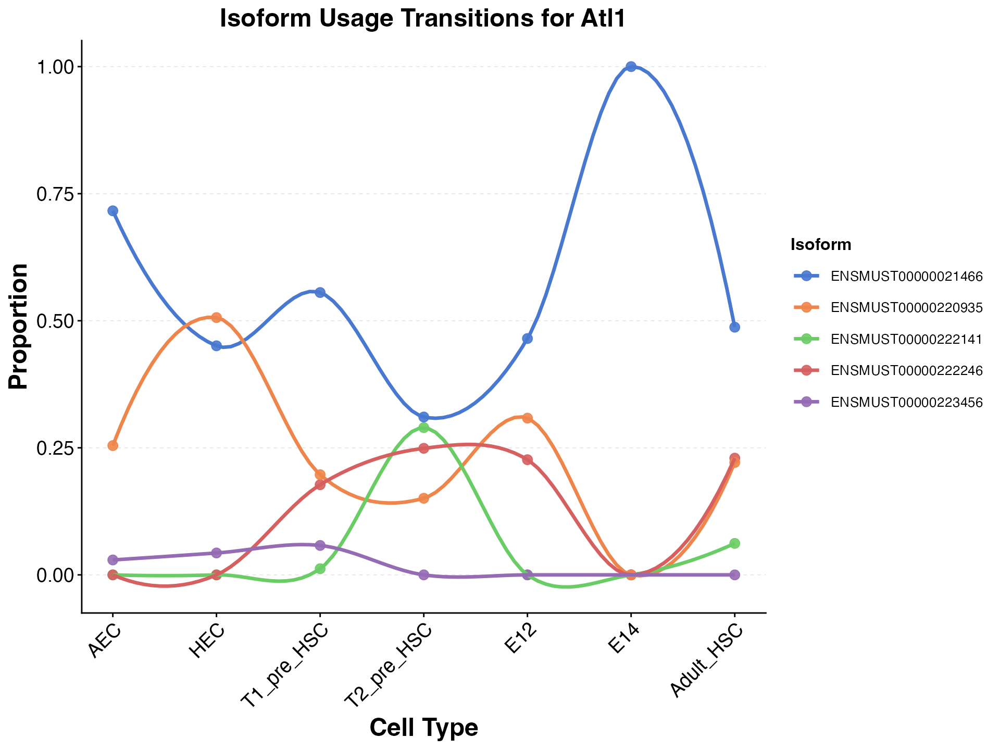
Multi-dimensional Comparisons
9. Complexity Radar Chart
Purpose: Compare multiple complexity metrics for selected genes.
# Select interesting genes
complex_genes <- tc_results$metrics[
tc_results$metrics$cell_type_coexpression_variability_class == "Cell-Type-Consistent Co-expression",
]$gene
if (length(complex_genes) > 0) {
plot_complexity_radar(
tc_results,
genes = complex_genes[1:min(10, length(complex_genes))]
)
}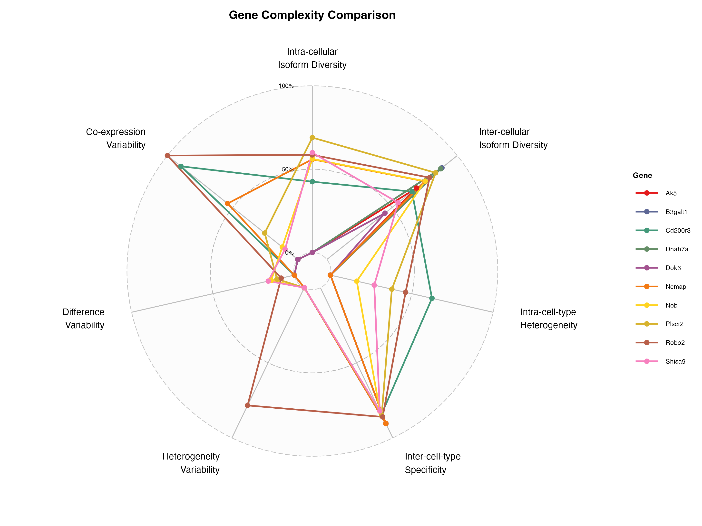
10. Single Gene Radar Across Cell Types
Purpose: Show how a gene’s complexity varies across cell types.
plot_single_gene_radar_cell_type(
tc_results,
gene_name = "Irf8"
)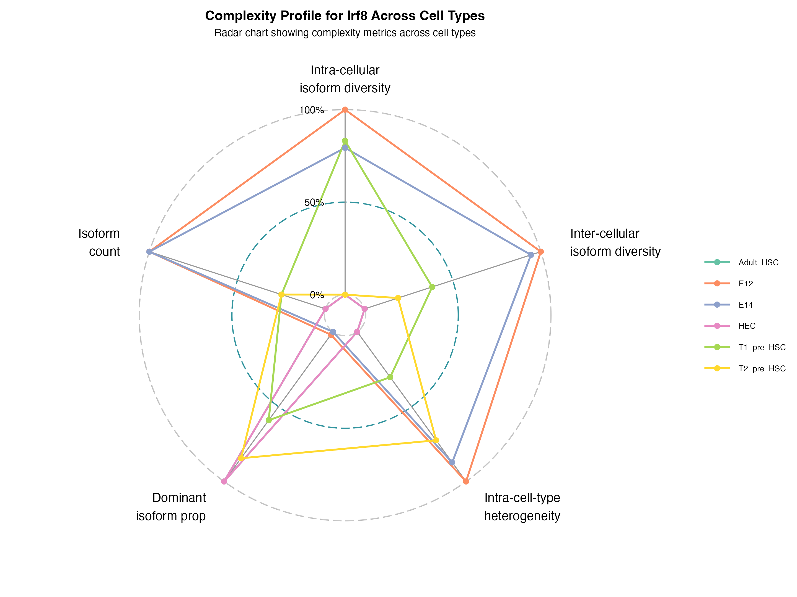
11. Multiple Genes Radar Comparison
Purpose: Compare multiple genes across cell types simultaneously.
plot_compare_multiple_genes_radar_cell_type(
tc_results,
gene_names = complex_genes[1:min(10, length(complex_genes))],
scale_type = "per_cell_type"
)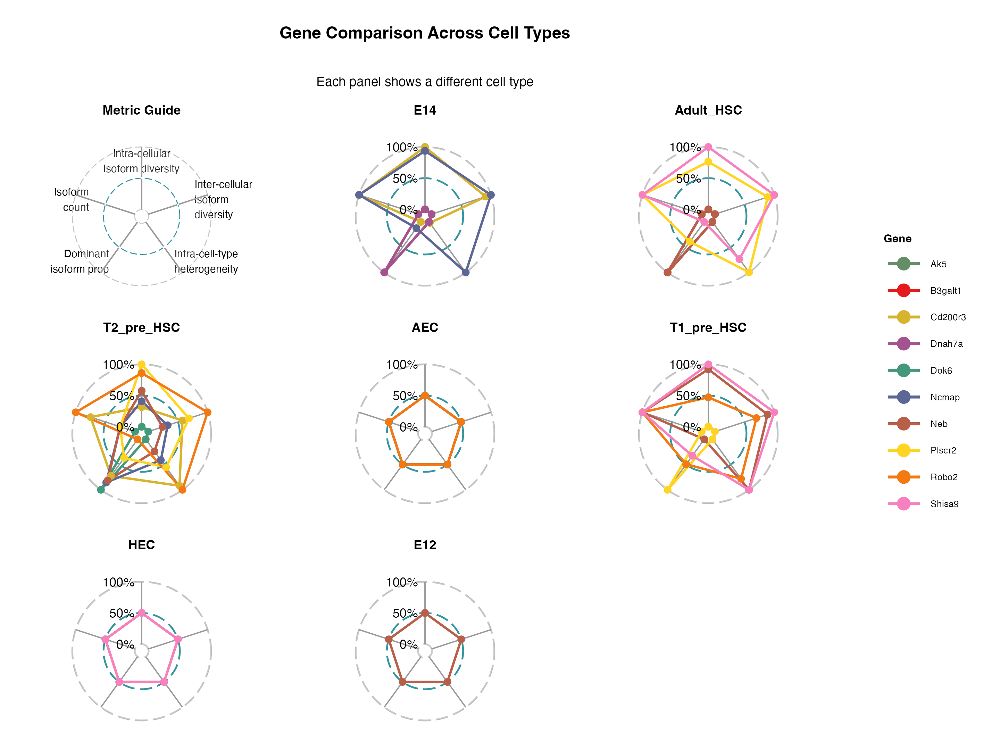
Interpretation Guidelines
For Complexity Landscapes:
- Gene positioning: Location indicates relative complexity
- Clustering patterns: Groups of genes with similar profiles
- Outliers: Often biologically interesting genes
- Threshold lines: Help identify significantly complex genes
Customisation Options
Most visualisation functions support customisation:
# Example: Customised landscape plot
plot_tc_landscape(
tc_results,
x_metric = "intra_cellular_isoform_diversity", # Change axes
y_metric = "intra_cell_type_heterogeneity_variability",
highlight_genes = c("Gene1", "Gene2"), # Highlight specific genes
n_label = 20, # Label more genes
point_transparency = 0.7 # Adjust transparency
)Saving Plots
# High-resolution plots for publication
pdf("complexity_analysis.pdf", width = 12, height = 10)
plot_tc_landscape(tc_results, n_label = 20)
dev.off()
# PNG for presentations
png("complexity_landscape.png", width = 1200, height = 1000, res = 150)
plot_tc_landscape(tc_results, n_label = 20)
dev.off()Best Practices
- Start with overview plots (landscape, density) to understand overall patterns
- Zoom in on interesting genes using isoform-specific plots
- Use comparative plots when analysing multiple conditions
- Adjust parameters based on your dataset size and complexity
- Consider colour-blind friendly palettes for publication figures
Session Information
sessionInfo()
#> R version 4.4.3 (2025-02-28)
#> Platform: aarch64-apple-darwin20
#> Running under: macOS Sequoia 15.5
#>
#> Matrix products: default
#> BLAS: /Library/Frameworks/R.framework/Versions/4.4-arm64/Resources/lib/libRblas.0.dylib
#> LAPACK: /Library/Frameworks/R.framework/Versions/4.4-arm64/Resources/lib/libRlapack.dylib; LAPACK version 3.12.0
#>
#> locale:
#> [1] en_US.UTF-8/en_US.UTF-8/en_US.UTF-8/C/en_US.UTF-8/en_US.UTF-8
#>
#> time zone: Australia/Brisbane
#> tzcode source: internal
#>
#> attached base packages:
#> [1] stats graphics grDevices utils datasets methods base
#>
#> other attached packages:
#> [1] ggplot2_3.5.2 ScIsoX_1.1.1
#>
#> loaded via a namespace (and not attached):
#> [1] RColorBrewer_1.1-3 rstudioapi_0.17.1
#> [3] jsonlite_2.0.0 shape_1.4.6.1
#> [5] magrittr_2.0.3 farver_2.1.2
#> [7] rmarkdown_2.29 GlobalOptions_0.1.2
#> [9] fs_1.6.6 BiocIO_1.16.0
#> [11] zlibbioc_1.52.0 ragg_1.4.0
#> [13] vctrs_0.6.5 Rsamtools_2.22.0
#> [15] RCurl_1.98-1.16 forcats_1.0.0
#> [17] htmltools_0.5.8.1 S4Arrays_1.6.0
#> [19] progress_1.2.3 curl_6.4.0
#> [21] SparseArray_1.6.2 Formula_1.2-5
#> [23] sass_0.4.10 bslib_0.9.0
#> [25] htmlwidgets_1.6.4 desc_1.4.3
#> [27] plyr_1.8.9 plotly_4.11.0
#> [29] cachem_1.1.0 GenomicAlignments_1.42.0
#> [31] mime_0.13 lifecycle_1.0.4
#> [33] iterators_1.0.14 pkgconfig_2.0.3
#> [35] Matrix_1.7-3 R6_2.6.1
#> [37] fastmap_1.2.0 GenomeInfoDbData_1.2.13
#> [39] MatrixGenerics_1.18.1 shiny_1.11.1
#> [41] clue_0.3-66 digest_0.6.37
#> [43] colorspace_2.1-1 patchwork_1.3.0
#> [45] S4Vectors_0.44.0 textshaping_1.0.0
#> [47] GenomicRanges_1.58.0 labeling_0.4.3
#> [49] httr_1.4.7 abind_1.4-8
#> [51] mgcv_1.9-1 compiler_4.4.3
#> [53] withr_3.0.2 doParallel_1.0.17
#> [55] BiocParallel_1.40.0 carData_3.0-5
#> [57] viridis_0.6.5 MASS_7.3-65
#> [59] DelayedArray_0.32.0 rjson_0.2.23
#> [61] tools_4.4.3 ggradar_0.2
#> [63] httpuv_1.6.16 glue_1.8.0
#> [65] restfulr_0.0.15 nlme_3.1-167
#> [67] promises_1.3.3 grid_4.4.3
#> [69] cluster_2.1.8.1 generics_0.1.4
#> [71] isoband_0.2.7 gtable_0.3.6
#> [73] tidyr_1.3.1 data.table_1.17.8
#> [75] hms_1.1.3 car_3.1-3
#> [77] XVector_0.46.0 BiocGenerics_0.52.0
#> [79] ggrepel_0.9.6 foreach_1.5.2
#> [81] pillar_1.11.0 ggExtra_0.10.1
#> [83] later_1.4.2 circlize_0.4.16
#> [85] splines_4.4.3 dplyr_1.1.4
#> [87] moments_0.14.1 lattice_0.22-6
#> [89] rtracklayer_1.66.0 tidyselect_1.2.1
#> [91] ComplexHeatmap_2.22.0 Biostrings_2.74.1
#> [93] miniUI_0.1.1.1 knitr_1.50
#> [95] gridExtra_2.3 IRanges_2.40.1
#> [97] SummarizedExperiment_1.36.0 stats4_4.4.3
#> [99] xfun_0.52 Biobase_2.66.0
#> [101] diptest_0.77-1 matrixStats_1.5.0
#> [103] DT_0.33 UCSC.utils_1.2.0
#> [105] lazyeval_0.2.2 yaml_2.3.10
#> [107] evaluate_1.0.4 codetools_0.2-20
#> [109] tibble_3.3.0 cli_3.6.5
#> [111] xtable_1.8-4 systemfonts_1.2.1
#> [113] jquerylib_0.1.4 Rcpp_1.1.0
#> [115] GenomeInfoDb_1.42.3 png_0.1-8
#> [117] XML_3.99-0.18 parallel_4.4.3
#> [119] pkgdown_2.1.3 prettyunits_1.2.0
#> [121] mclust_6.1.1 bitops_1.0-9
#> [123] viridisLite_0.4.2 scales_1.4.0
#> [125] ggridges_0.5.6 purrr_1.1.0
#> [127] crayon_1.5.3 GetoptLong_1.0.5
#> [129] rlang_1.1.6 cowplot_1.2.0